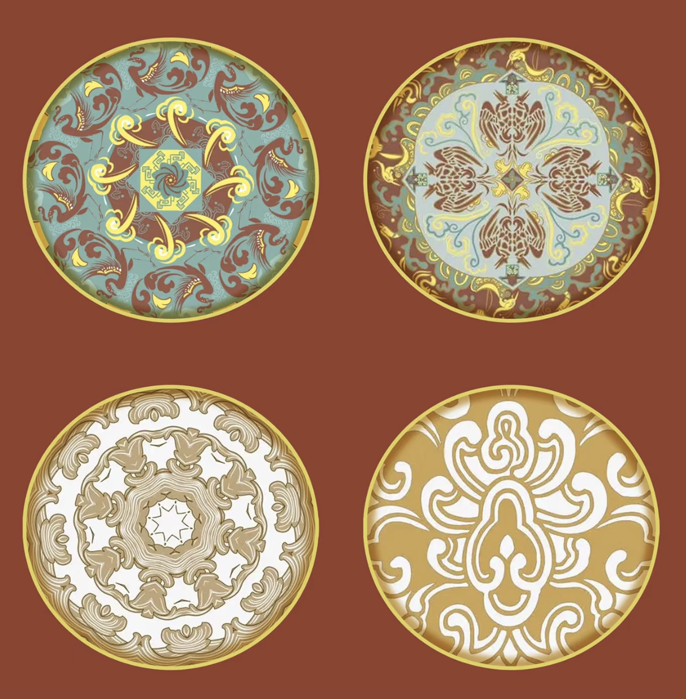
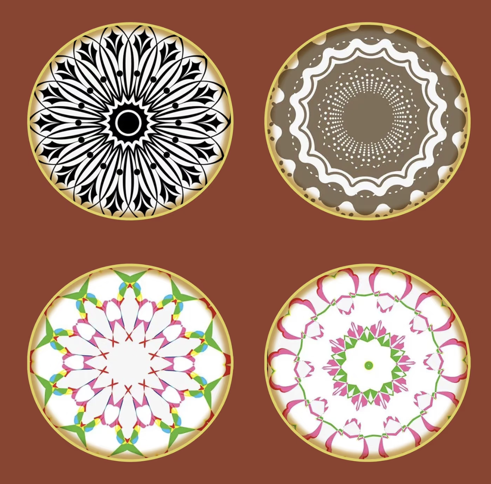
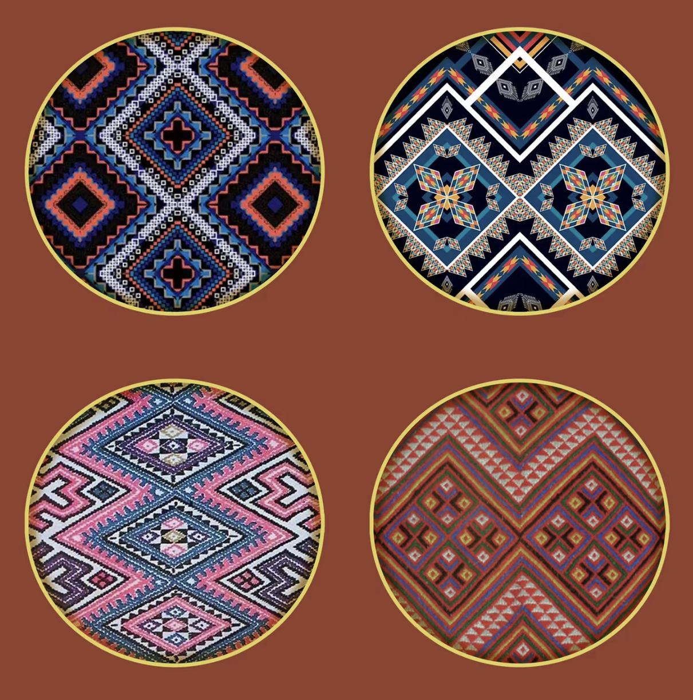
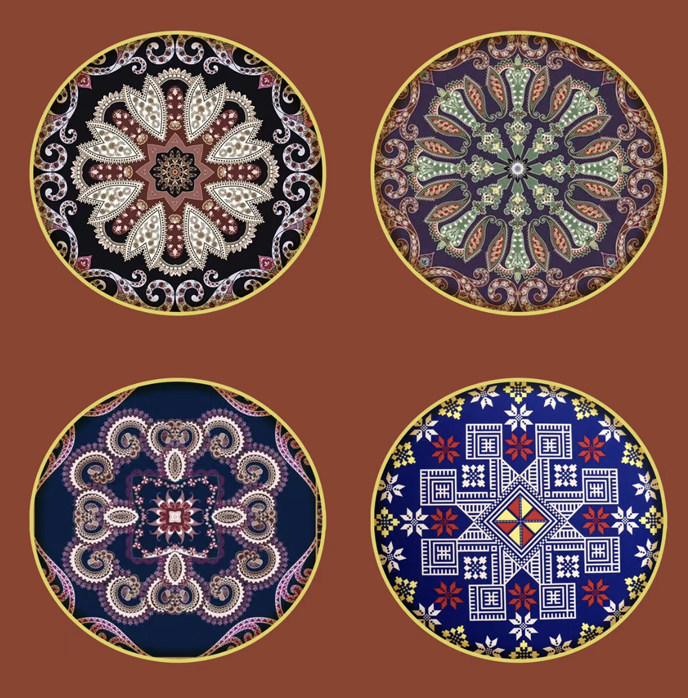

展现瑶族传统生活场景，如婚礼、舞蹈、农耕等，记录民族记忆

纹样多取自自然和神话形象，具有强烈的象征意义与民族美感。
已收录 10 素材

敦煌石窟创造了璀璨夺目，绚丽多姿的的舞蹈形象，如有:在天宫栏墙奏乐，舞蹈的天宫伎乐，在大铺经变中，居于显著地位正在真实地“舞蹈”着的伎乐天，具有浓郁生活气息的舞蹈人形象以及富有那些舞蹈美感的菩萨形象，力士等，这些舞蹈形象可以分为人们意向中神佛世界的天乐舞和人间俗舞两大类。
已收录 9 素材

图腾图案如龙凤、太阳、鼓等，象征族群精神与祖先崇拜。
已收录 7 素材

飞天是佛教造型艺术，它从印度经过西域传到中国内地，经过了一千多年的演变和发展，日渐完美，形成了中国化的造型。由于它的题材，表现方式具有很高的艺术情趣，所以时代相传，为人们所喜爱，以至超出佛教的意义，而成为一种祥瑞的象征。
已收录 4 素材
与千年刺绣艺术的一次邂逅

瑶绣与现代设计的融合
通过数字技术重现失传的瑶族刺绣图案，实现非遗的数字化保护。
将传统图案与现代服装设计融合，展现瑶绣的新生代魅力。
运用现代美术语言重新演绎瑶族传统图腾图案，打造创新文创作品。